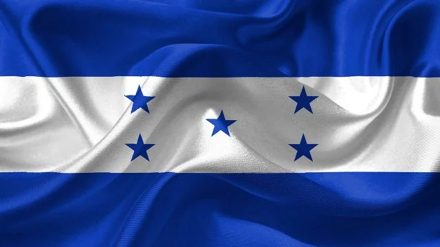
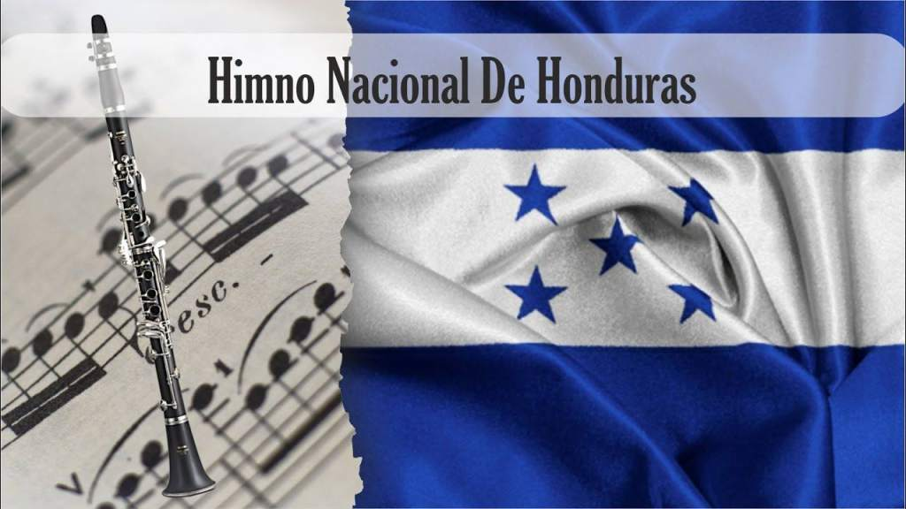
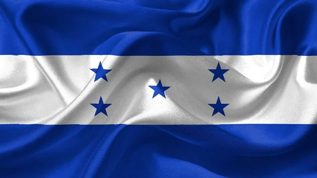
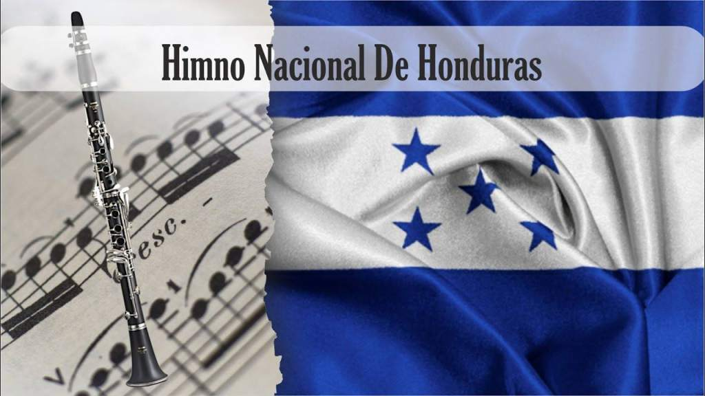
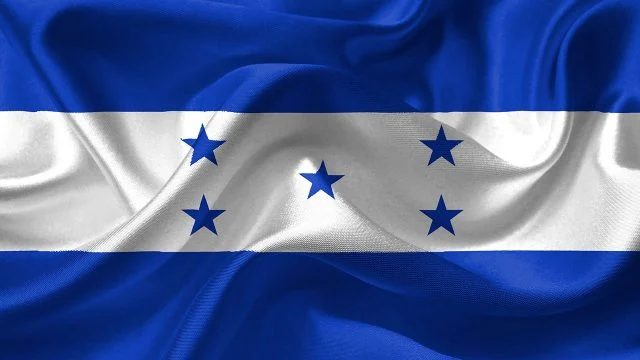
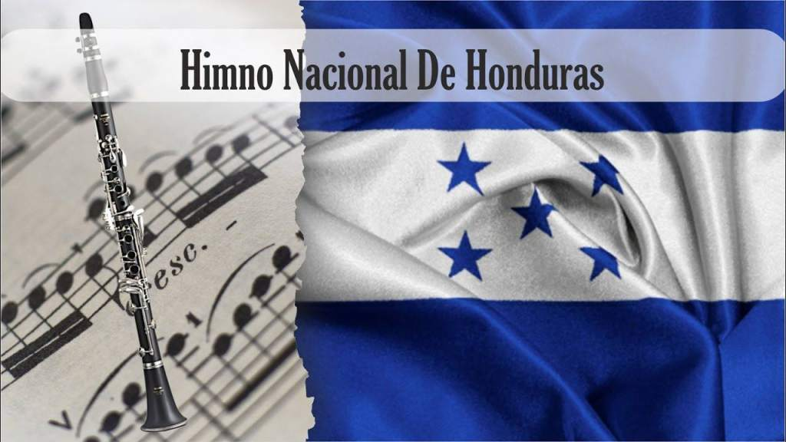

Simbolos patrios nacionales
y la llegada de los pliegues.
 





y la llegada de los pliegues.


Los pliegos de la independencia son los documentos contentivos del acta de independencia y manifiestos enviados del Palacio Nacional de Guatemala a todos los ayuntamientos de las provincias de Honduras. Luego de la firma de el acta de independencia en la actual ciudad de Guatemala la noticia de nuestra independencia se conoció hasta el día 28 de septiembre, 14 días después con la llegada de los pliegos de Independencia a las ciudades de Comayagua y Tegucigalpa. Aunque la ciudad de Gracias fue la primera en recibir los pliegos el 22 de septiembre.
Temprano por la mañana del 28 de Septiembre de 1821, correos urgentes arribaron a matacaballo a las villas de Comayagua y Tegucigalpa. Los pliegos sellados que traían estos mensajeros fueron abiertos en los respectivos ayuntamientos.
Daban cuenta de las decisiones tomadas hacia catorce días, el quince de Septiembre, en solemne sesión ocurrida en el Palacio de los Capitanes Generales de Guatemala, e informaban que Guatemala se había pronunciado a favor de la independencia. La caracterización de que, por liberal, Tegucigalpa celebró los pliegos con júbilo, en tanto que Comayagua, por conservadora, los recibió con reticencia, es simplista.
Sucedió que el Ayuntamiento de Tegucigalpa estaba controlado por Dionisio de Herrera y los partidarios de la independencia. En Marzo de ese año el Alcalde Narciso Mallol había muerto y aún no se le había designado sustituto. Mallol, que conocía la forma de pensar de Herrera, para vigilarlo mejor lo había incorporado a la administración municipal. Cuando llegó Septiembre Herrera tenía las manos libres para echar a volar, en son de alegría, las campanas de la libertad.
En el terreno siempre resbaladizo de las conjeturas, ¿hubo además de los pliegos algún otro tipo de comunicación entre Guatemala y Tegucigalpa? Tegucigalpa se pronunció a favor de seguir en todo y con todo lo acordado en Guatemala, que se contenía en los pliegos. El Acta del 15 de Septiembre había sido no sólo redactada sino en gran medida inspirada por José Cecilio del Valle.
Los Herrera: Dionisio, Justo y Próspero, primos de Valle, mantuvieron siempre con él seguida correspondencia. Los dos directores de periódico habían jugado su carta triunfadora el día quince. Para Pedro Molina lo más importante era arrancarle a las autoridades españolas y a los prominentes criollos una declaratoria de emancipación. Forzarle la mano a los indecisos. Desde que se supo que Chiapas se había adherido a la independencia mejicana la agitación fue creciendo en Guatemala. Barrundia, Molina, su mujer Dolores Bedoya, prepararon a la población para la sesión programada para el 15.
El pueblo organizado por estos políticos llenó las calles, la plaza, los pasillos y la antesala del lugar de sesiones. El numeral uno del Acta recoge la incomodidad y el no disimulado temor de las fuerzas vivas convocadas a la sesión, las muy ilustres autoridades coloniales, dignatarios de la Iglesia, miembros del Claustro Universitario, del Colegio de Abogados, del Consulado de Comercio, del Ayuntamiento, de las Ordenes Religiosas cuando determinaron proclamar la independencia y evitar con ello que el pueblo mismo lo declarara.
Presintieron la revolución, que el pueblo los destituyera y se pronunciara independiente. Decidieron adelantarse a lo que calificaron de temible consecuencia. La proclamación fue seguida por estallido de cohetes y muestras de regocijo popular. Molina había logrado su propósito. Le tocaba el turno a Valle. La discusión prosiguió y fue orientada por Valle. Luego le encomendaron redactar el Acta de los acuerdos establecidos. Valle, el de Choluteca, pensó en términos provincianos pero también globales.
Lo decidido era la voluntad del pueblo de Guatemala. Pero ¿y el resto de las ciudades y sus habitantes, qué pensaban? De la mano de Valle, en el Acta se diseñó un proceso de consulta electoral que permitiría a todas las demás provincias elegir a sus representantes, para que estos se reunieran en un magno congreso centroamericano, en Guatemala, el siguiente 1 de Marzo de 1822. Dos cometidos habría de tener, según el Acta, este Congreso de Marzo: ratificar o no la declaratoria de independencia, y en caso positivo, determinar la forma de gobierno y la ley fundamental por regir en el nuevo país. Con sus vidas, de ser preciso, juraron los habitantes de Tegucigalpa, animados por Dionisio de Herrera desde el balcón del Ayuntamiento, defender lo decidido en Guatemala. En Comayagua fue distinto. Condujo la sesión el propio Gobernador Intendente, el peninsular José Tinoco. La discusión se prolongó muchas horas.
Finalmente Comayagua se pronunció también a favor de la independencia pero rechazó la vía de acción contenida en el Acta y propuesta desde Guatemala. Dados los acontecimientos posteriores y la actitud del Capitán General de Guatemala, Gabino Gaínza, y otros criollos de la capital, siempre en el terreno de las conjeturas, ¿hubo algún otro tipo de comunicación anexa a los pliegos del Acta, entre las autoridades de la Capitanía General y las de Comayagua? En su decisión Comayagua se ahorraba la celebración de elecciones y la instalación de un congreso que se reuniría el siguiente año para decidir la forma de gobierno. Comayagua miraba en dirección de Chiapas, hacia la fórmula de las «Tres Garantías» que había posibilitado la independencia mejicana.Es decir, independencia sí, con la condición de que se constituyera un régimen monárquico con sede en Méjico y de que quedaran intocables y sagrados todos los privilegios y prerrogativas de que gozaba la Santa Iglesia Católica.

El escudo de Honduras fue creado por el Decreto Legislativo del 3 de octubre de 1825, está compuesto por símbolos alusivos a su territorio, historia y la variedad de recursos naturales que posee el país.
Las estrellas simbolizan a los cinco países que formaron la antigua Federación Centroamericana, la bandera consta de tres franjas horizontales del mismo tamaño, de color azul turquesa las exteriores y blanca la central.
El Himno Nacional está compuesto de un coro y siete estrofas que relatan eventos históricos por los cuales atravesó Honduras. El himno fue creado por Augusto C. Coello.
La orquídea de la virgen es una planta epífita, es decir, crece sobre árboles y posee llamativos pétalos blancos que se complementan con el tamaño y fragancia de la flor.
La Guara Roja o Guacamaya Roja es nativa de Honduras, principalmente de La Mosquitia y gracias a un proyecto de conservación se le puede encontrar volando libremente en el parque arqueológico de Copán Ruinas.
El Venado Cola Blanca es un símbolo Nacional de Honduras, estos venados son de tamaño mediano, tiene patas largas y espalda lisa, su cabeza es grande y angosta.
Elegir el pino como símbolo patrio fue idea del actual presidente Miguel Paz Barahona, se decidió así debido a que es el árbol que predomina en los bosques de Honduras.
El Mapa Nacional de Honduras es la representación geográfica del país y en el figuran los 18 departamentos que componen la división administrativa y los mares que bañan sus costas.

Hola mucho gusto, espero que haya sido de su agrado esta
información de los pliegos nacionales en Honduras, si ha sido así no
dudes en visitar nuestras otras páginas.
Publicamos páginas constantemente asi que no te olvides de pasar por nuestra web.